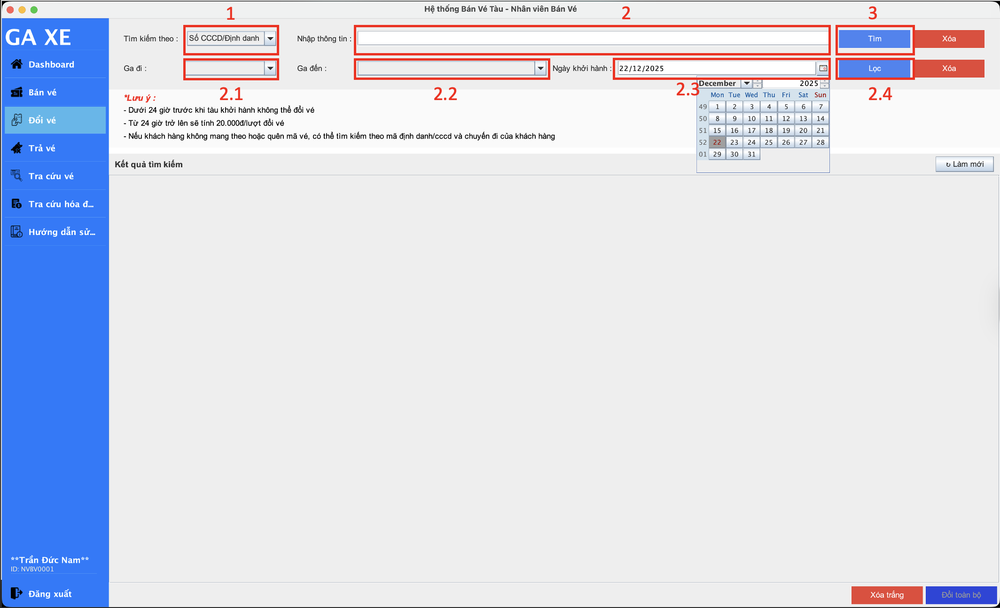
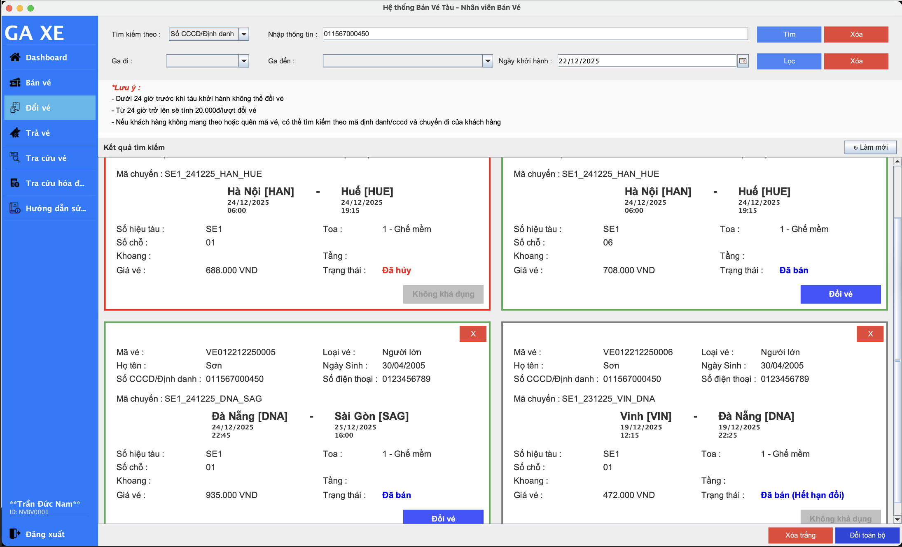
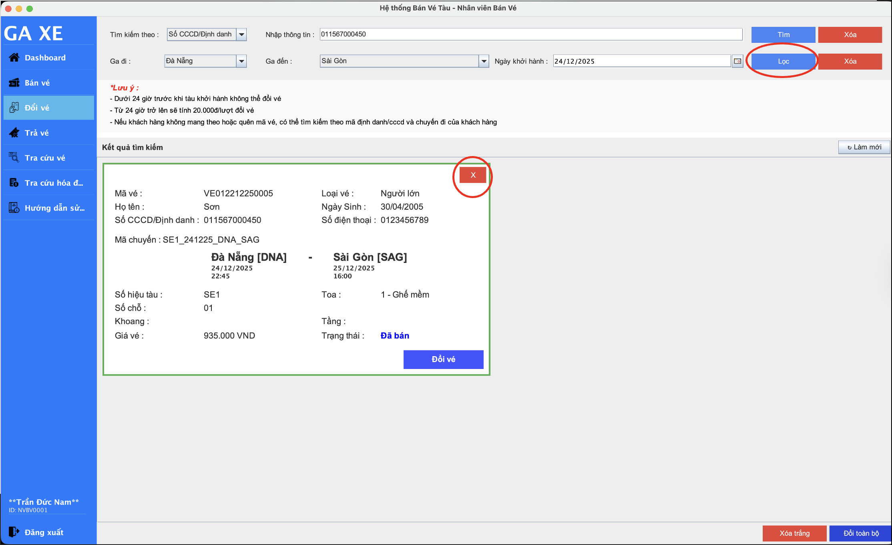
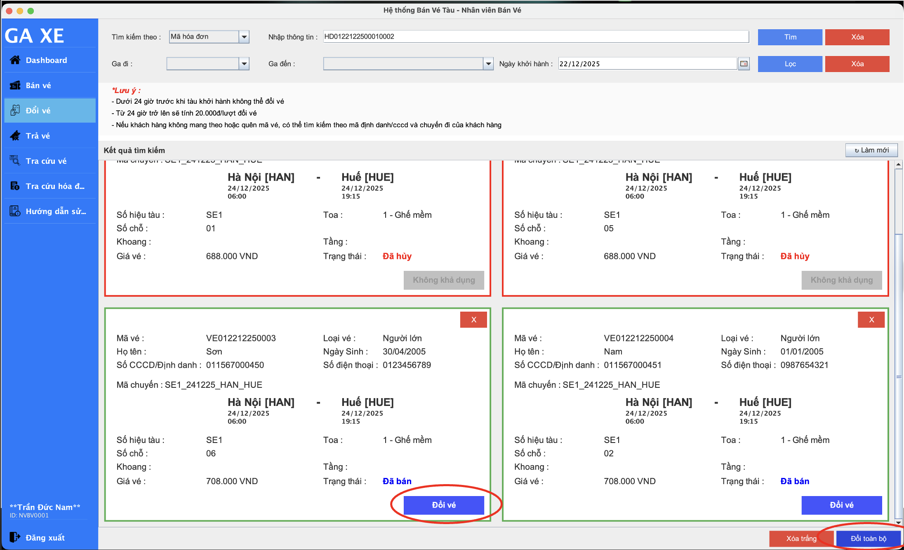
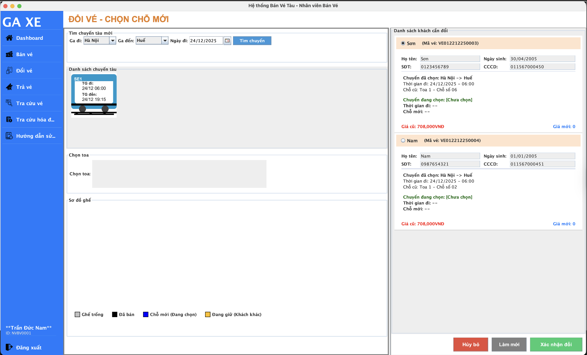
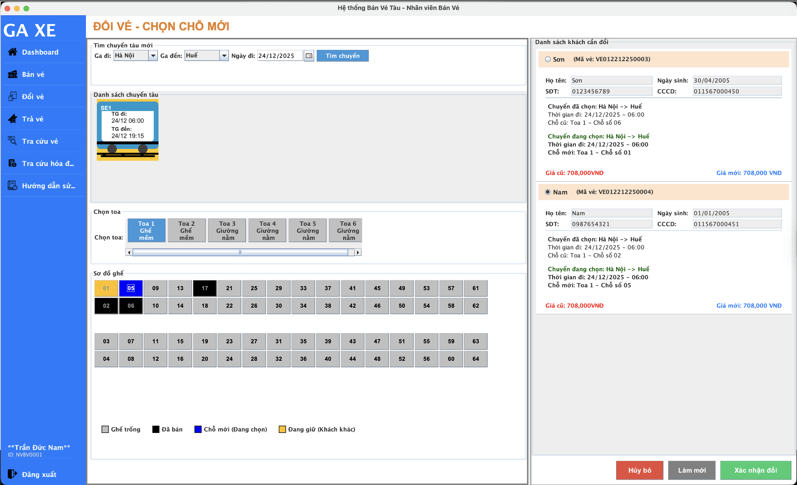
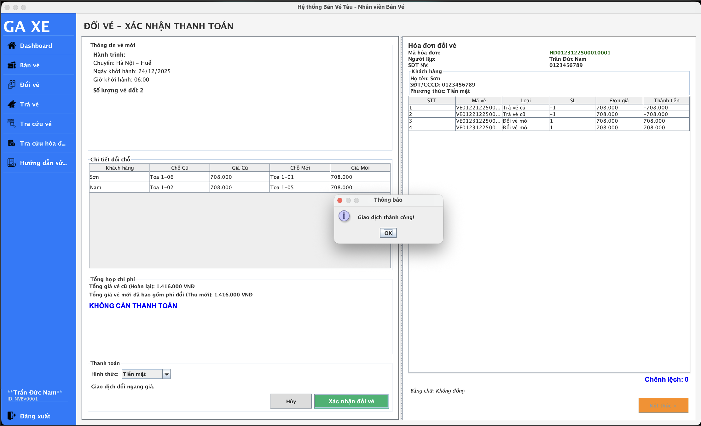

Hướng dẫn đổi vé
Tìm kiếm vé cần đổi
Phần tìm kiếm được chia làm 2 khu vực riêng biệt (tương ứng với 2 hàng trên màn hình):
1. Hàng trên: Tìm kiếm Chính
Dùng để xác định vé hoặc khách hàng cụ thể. Bao gồm 3 tiêu chí:
- Mã vé: Tìm chính xác một vé cụ thể.
- Mã hóa đơn: Tìm toàn bộ vé trong cùng một đơn hàng (cùng chuyến tàu).
- SĐT / CCCD: Tìm lịch sử đặt vé của khách hàng (có thể ra nhiều chuyến tàu khác nhau).
→ Sau khi chọn tiêu chí và nhập thông tin, nhấn nút "Tìm" màu xanh để hiển thị kết quả.
2. Hàng dưới: Bộ lọc Bổ sung
Dùng để thu hẹp kết quả khi tìm bằng SĐT hoặc CCCD. Nhân viên có thể chọn thêm:
- Ga đi / Ga đến: Lọc theo hành trình.
- Ngày khởi hành: Lọc theo ngày cụ thể.
→ Nhấn nút "Lọc" để áp dụng các điều kiện này. (Có thể nhấn Lọc ngay mà không cần nhấn Tìm nếu đã nhập đủ thông tin).
Mỗi hàng đều có một nút Xóa hoạt động độc lập với nhau:
- Nút Xóa ở hàng trên: Chỉ xóa trắng ô "Nhập thông tin" của phần tìm kiếm chính.
- Nút Xóa ở hàng dưới: Chỉ đưa các ô chọn Ga và Ngày về trạng thái mặc định (trống), không ảnh hưởng đến hàng trên.
Tính năng này giúp nhân viên sửa nhanh thông tin nhập sai ở từng phần mà không phải nhập lại từ đầu toàn bộ.
Chọn vé đổi
Về trạng thái vé: Hệ thống phân loại vé dựa trên 3 trạng thái hiển thị chính: (1) Màu đỏ: Vé đã thực hiện nghiệp vụ hủy; (2) Màu xanh: Vé đã thanh toán thành công và còn đủ điều kiện đổi (trước giờ khởi hành tối thiểu 24 giờ); (3) Màu xám: Vé không đủ điều kiện thực hiện nghiệp vụ do chuyến tàu đã kết thúc hoặc đã quá hạn đổi theo quy định.
Khi thực hiện tra cứu theo Số điện thoại hoặc Số căn cước công dân, hệ thống sẽ hiển thị danh sách tất cả các vé liên quan, có thể bao gồm nhiều chuyến tàu khác nhau. Để tối ưu hóa danh sách trước khi thực hiện nghiệp vụ đổi tập thể, nhân viên có thể thao tác như sau:
- Lược bỏ vé đơn lẻ: Nhấn vào nút X màu đỏ ở góc phải trên cùng của từng thẻ vé để loại bỏ những vé không có nhu cầu thay đổi ra khỏi danh sách hiển thị tạm thời.
- Sử dụng bộ lọc chuyến tàu: Sử dụng chức năng Lọc (Ga đi, Ga đến, Ngày khởi hành) ở hàng công cụ thứ hai để thu hẹp danh sách về cùng một chuyến tàu cụ thể.
Việc tinh lọc này giúp đảm bảo danh sách hiển thị chỉ còn các vé cùng chung một chuyến tàu, từ đó cho phép nhân viên sử dụng nút "Đổi toàn bộ" một cách hợp lệ mà không bị hệ thống từ chối do xung đột dữ liệu chuyến.
Về hình thức đổi vé: Nhân viên có thể thực hiện Đổi vé đơn (sử dụng nút "Đổi vé" trên từng thẻ vé) hoặc Đổi vé tập thể (sử dụng nút "Đổi toàn bộ") và chọn xác nhận để chuyển đến màn hình xử lý chọn chỗ mới. Lưu ý: Đối với hình thức đổi tập thể, tất cả các vé được chọn bắt buộc phải thuộc cùng một chuyến tàu. Trong trường hợp các vé không đồng nhất về mã chuyến, hệ thống sẽ từ chối thao tác và hiển thị thông báo lỗi để đảm bảo tính toàn vẹn dữ liệu.
3. Chọn chuyến tàu và chỗ mới
Tại giao diện ban đầu, hệ thống sẽ tự động hiển thị danh sách các khách hàng cần đổi vé ở cột bên phải (bao gồm thông tin vé cũ). Nhân viên tiến hành nhập thông tin Ga đi, Ga đến và Ngày khởi hành mong muốn, sau đó nhấn nút "Tìm chuyến".
Sau khi danh sách chuyến tàu hiện ra, quy trình chọn chỗ diễn ra theo trình tự sau:
- Bước 1 - Chọn toa: Nhấn vào chuyến tàu phù hợp, sau đó chọn toa tàu trên thanh danh sách toa để hiển thị sơ đồ ghế.
-
Bước 2 - Chọn ghế: Nhấn chọn vào các ghế có trạng thái Trống (màu trắng).
→ Hệ thống sẽ đánh dấu ghế vừa chọn sang màu xanh (Đang chọn), tự động cập nhật thông tin "Chỗ mới" cho khách hàng hiện tại và tính toán lại giá vé mới. - Bước 3 - Cơ chế tự động: Sau khi chọn xong chỗ cho khách hàng thứ nhất, hệ thống sẽ tự động chuyển lượt chọn sang khách hàng tiếp theo trong danh sách. Nhân viên tiếp tục chọn ghế cho đến khi tất cả khách hàng đều đã có chỗ mới.
- Bước 4 - Điều chỉnh (Nếu cần): Để chọn lại chỗ cho một khách hàng cụ thể, nhân viên nhấn vào nút tròn (Radio button) trước tên khách hàng đó. Lúc này, ghế đang chọn của họ sẽ sáng màu xanh để nhận biết, nhân viên có thể chọn một ghế khác thay thế.
- Bước 5 - Hoàn tất: Nhấn nút "Xác nhận đổi" (màu xanh lá) ở góc dưới cùng bên phải để kết thúc quá trình chọn chỗ. Hệ thống sẽ tự động chuyển sang màn hình thanh toán.
Trong một phiên giao dịch đổi vé tập thể, tất cả các vé mới bắt buộc phải thuộc CÙNG MỘT CHUYẾN TÀU. Nếu nhân viên cố tình chọn chuyến tàu khác khi chưa hoàn tất việc đổi vé cho toàn bộ danh sách, hệ thống sẽ hiển thị thông báo lỗi và ngăn chặn thao tác.
Xác nhận thanh toán
Đây là bước cuối cùng để hoàn tất giao dịch. Giao diện được chia thành 2 khu vực chính: Bảng kê chi tiết (bên trái) và Hóa đơn dự kiến (bên phải). Quy trình thực hiện như sau:
- Bước 1 - Kiểm tra thông tin: Nhân viên rà soát lại mục Thông tin vé mới và Chi tiết đổi chỗ (bảng so sánh đối chiếu giữa ghế cũ và ghế mới) để đảm bảo chính xác trước khi xuất vé.
-
Bước 2 - Đối soát chi phí: Tại mục Tổng hợp chi phí, hệ thống sẽ tự động tính toán số tiền chênh lệch:
- Khách cần trả thêm: Nếu giá vé mới cao hơn vé cũ.
- Hoàn lại tiền: Nếu giá vé mới thấp hơn vé cũ.
- Không cần thanh toán: Nếu giá trị hai vé ngang bằng nhau (Giao dịch đổi ngang giá).
- Bước 3 - Xác nhận giao dịch: Nhân viên chọn Hình thức thanh toán (Tiền mặt/Chuyển khoản...), sau đó nhấn nút "Xác nhận đổi vé" (màu xanh lá) để lưu giao dịch xuống hệ thống.
- Bước 4 - Hoàn tất: Sau khi thông báo "Giao dịch thành công" xuất hiện, chi tiết hóa đơn sẽ được hiển thị đầy đủ ở khung bên phải. Nhấn nút Ok và "Kết thúc" (màu cam) ở góc dưới cùng để kết thúc quá trình đổi vé.